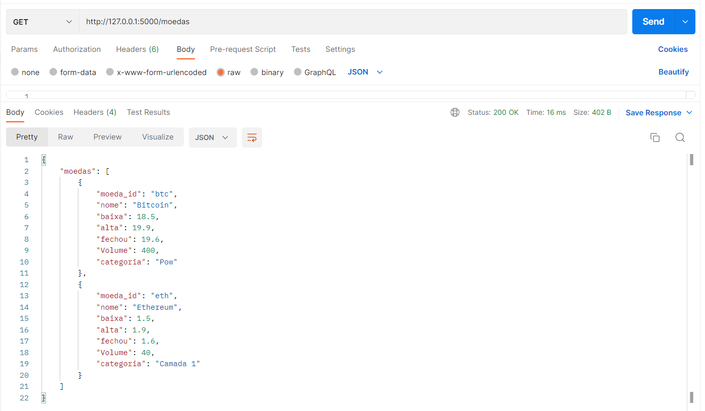

API (Application Programming Interface) – É uma interface entre dois programas diferentes que se comunicam. Com ela terceiros disponibilizam uma interface de modo que possamos consumir um determinado serviço sem nos preocuparmos com a implementação. Web Service é uma API projetada para se comunicar obrigatoriamente via rede. Ou seja, quando uma API precisa enviar dados através da rede, podemos chamar de Web Services. Com o Postman fazemos essa comunicação através do get, post, update e delete. 
As quatro operações básicas de armazenamento formam o CRUD
Exemplo de Requisição para criar uma nova moeda: /moedas/{moeda_id}
Requisição para listar todos as moedas do sistema, podendo opcionalmente receber filtros personalizados via path, de forma que se o cliente não definir nenhum parâmetro de consulta (nenhum filtro), os parâmetros receberão os valores padrão.
Requisição para visualizar os dados de uma moeda específica. Faz-se um GET de /moedas/{moeda_id}
Exemplo de Requisição para atualizar um novo moeda: /moedas/{moeda_id}
Exemplo de Requisição para deletar uma moeda: /moedas/{moeda_id}